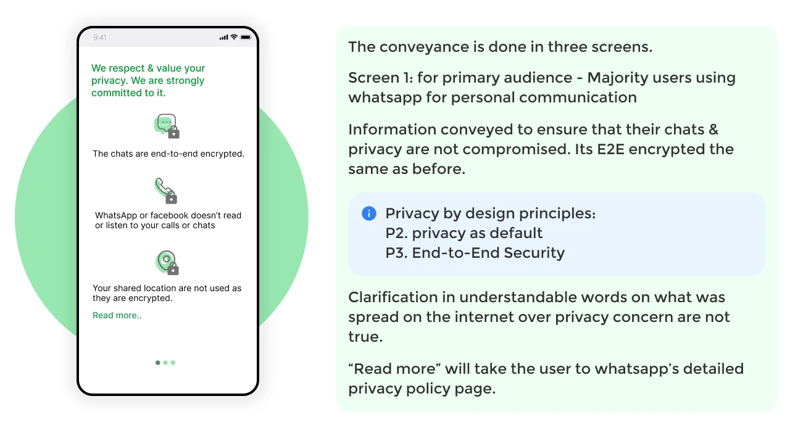
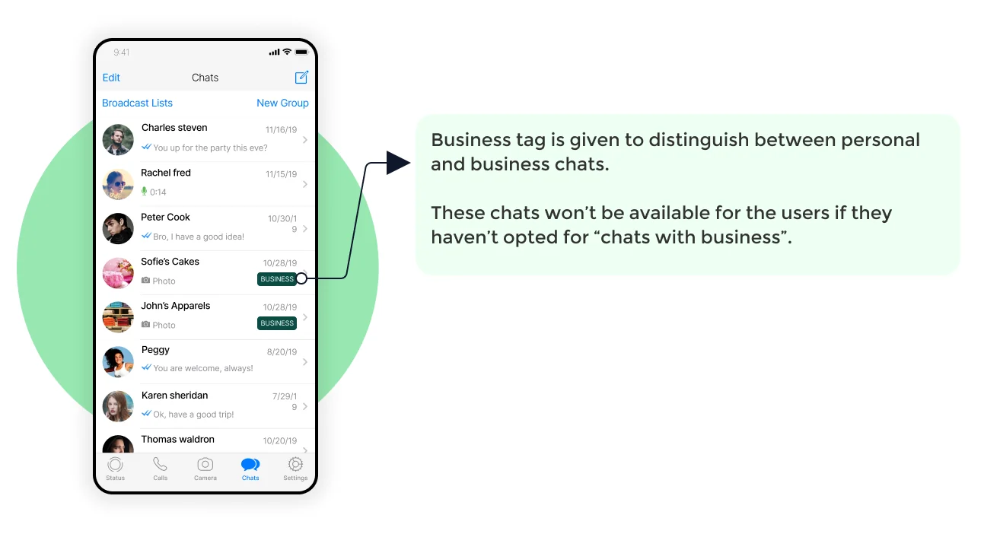
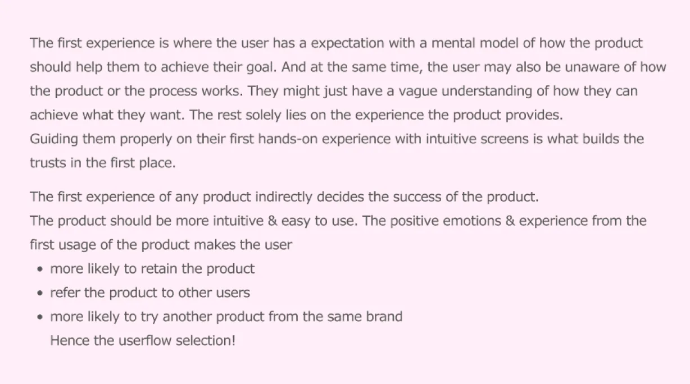
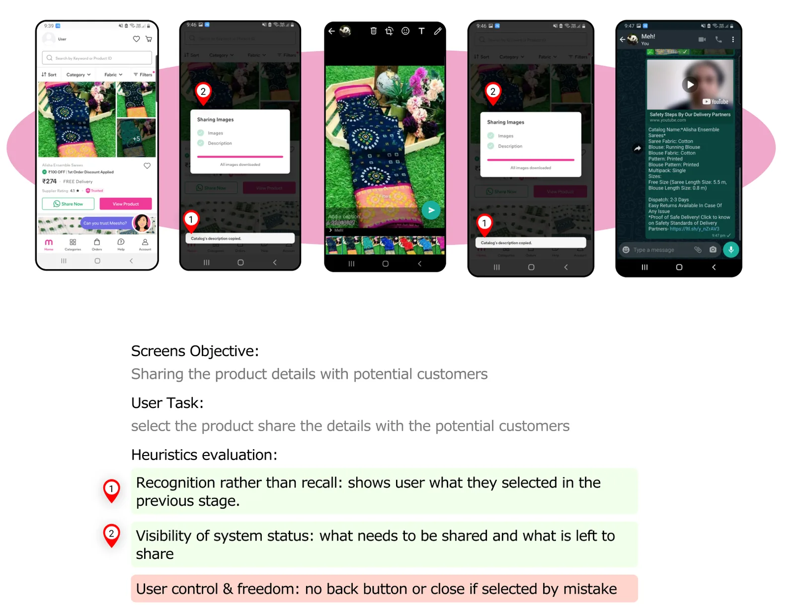
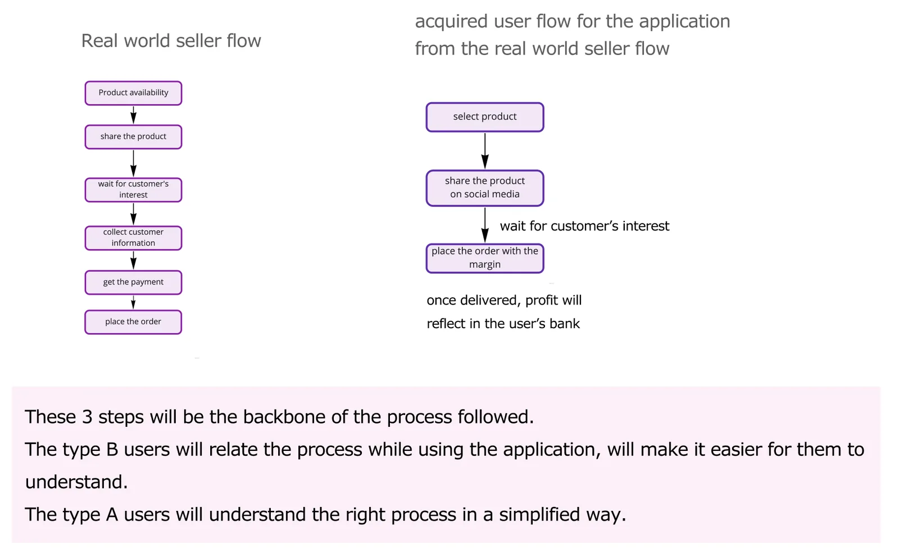
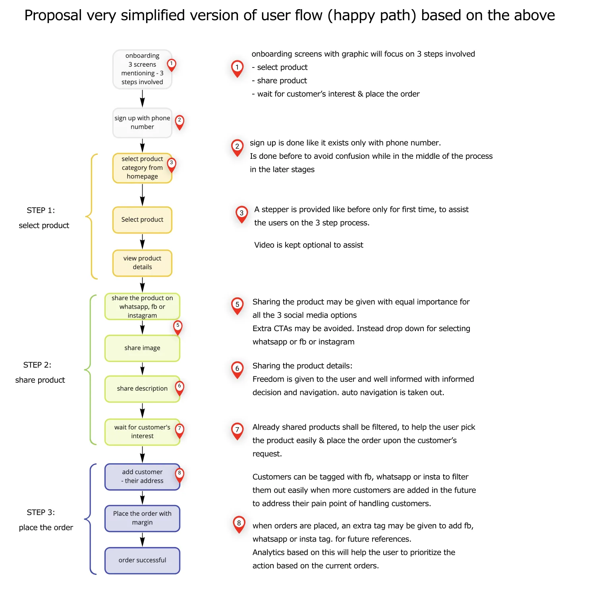
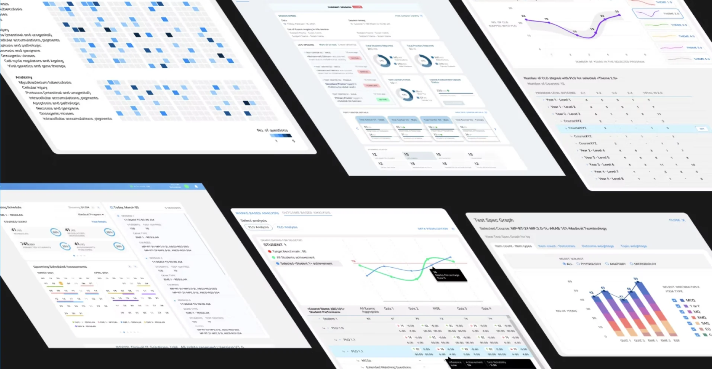

Consumer apps lose users when the design fails. Enterprise tools keep them, because the users have no choice. The cost hides in slow work, workarounds and training bills. I've spent eight years finding that hidden cost and designing it out.
My method is boring on purpose: find the real user, find the real cost, fix the decision that caused both.
The meter at the top tracks how far you've read, and this index checks itself off. Skim mode folds the page down to its key lines if you have thirty seconds, not ten minutes.
Scroll to open File 01
File01
WhatsApp privacy update
When WhatsApp lost the trust of 2 billion users, I redesigned the message, not the product.
Role
Solo designer
Duration
Hackathon sprint
Scope
Research, strategy, UI
Result
Winner, UX Hack, April 2021
The policy wasn't the failure. The communication was.
01 — The problem
A policy about business chats read like a threat to everyone.
In January 2021, WhatsApp told its users to accept an updated privacy policy or lose access. The update was about business chats. Most users never got that far. They read "WhatsApp shares data with Facebook" and assumed their private messages were next.
Millions left. Signal and Telegram had their best download weeks ever. WhatsApp had changed almost nothing about personal chats, and still triggered one of the biggest user exoduses in messaging history.
That's the problem I picked up.
Each change was announced the same way to every user, and each time users had less say than before.
This wasn't a privacy problem. It was a segmentation problem wearing a privacy costume.
02 — What I found
One "Accept" button, four different audiences.
I traced WhatsApp's policy history: the 2014 Facebook acquisition and its promise that privacy was coded into WhatsApp's DNA, the 2016 change that shared phone numbers with Facebook and gave users 30 days to opt out, and the 2021 update that offered no choice at all.
Then I looked at who was actually reading these announcements. WhatsApp had four different audiences behind one button:
Personal users, there since the early days, who only chat with friends and family
Customers who message businesses occasionally
Sellers who run their business on WhatsApp
Businesses managing both WhatsApp and Facebook tools
The 2021 policy changed things for group four and barely touched group one. But group one is the majority, and the announcement made no distinction. So the people least affected panicked the most, and left.
0
users saw the notice
0
audiences, one message
0
group actually affected
The original notice, annotated: where it fell short for everyday users.
The original notice was a wall of legal text with two real options: accept, or eventually lose your account. It answered none of the questions users actually had. Can WhatsApp read my messages? Does Facebook see my chats? What changes for me?
Reassurance before legal text, in plain words.
Defaults protect the user. Nobody accepts terms they don't need.
03 — The solution
Three moves, all aimed at matching the message to the reader.
Say what isn't changing, first.
The first screen answers the scariest question before anything else: personal conversations stay end-to-end encrypted, and WhatsApp can't read them.
Separate business chats from personal chats.
The policy only affected conversations with businesses. So the communication treats them as what they are: a separate, optional feature with its own explanation, its own visual label, and its own decision.
Make business messaging opt-in, with privacy on by default.
Users choose whether businesses can reach them. Anyone who wants business features turns them on, understands the trade, and moves on.

Screen 1 — reassurance for personal chats

Screen 2 — business chats labelled
Screen 3 — opt-in toggle, privacy on by default
Independent convergence, not influence.
04 — How it compares
The same calls WhatsApp's team made, and one they stopped short of.
WhatsApp's own fix rolled out between February and May 2021: an in-app banner, a staged explanation flow, and a line making clear personal chats couldn't be read or listened to. A hackathon jury picked my solution as the winner while that rollout was still in progress. I didn't have WhatsApp's constraints, their legal team, or their scale. But on the calls I could make, I made the same ones their team made, and pushed past them where they stopped.
↔
My solutionWhatsApp shipped
Drag to compare. WhatsApp's shipped flow (Feb–May 2021) against my solution (April 2021), at the same point in the flow.
WhatsApp shipped
My solution
Plain-language reassurance about encryption, placed first
Same call, independently
Staged, skimmable screens instead of a legal wall
Same call, independently
Business chats labelled as optional
Business chats labelled, and opt-in with a real control
One message explained to everyone
Four user types segmented, message matched to reader
Flow ends at "Accept"
Flow ends at a settings choice the user owns
Rollout announced Feb 18, 2021, effective May 15, 2021, before the hackathon. This is convergence on the same problem, not influence in either direction.
I never validated which words actually lower panic.
Mapping four segments took most of my sprint. I'd compress that to hours now.
05 — What I'd do differently
Untested copy, and research I'd now compress.
I'd test the copy. My screens assumed plain language works better than legal language, which is a safe bet, but I'd want to run the variants through quick comprehension tests before committing.
And I'd use AI in the research phase. Mapping four user segments from policy history ate most of the sprint; today that's a few hours, and the time saved goes into testing instead.
File02
Meesho seller onboarding audit
A reseller's first order decides whether she trusts Meesho enough to stay. I audited that flow against her own goals, and found three places it quietly breaks them.
Role
Solo auditor
Duration
Hackathon weekend, separate round from File 01
Scope
Heuristic audit, flow redesign proposal
Result
Runner-up, UX Hack, April 2021
A person's first experience with a product decides whether they trust it enough to stay, refer it, or try again.
Three goals kept coming up: share products easily, keep track of orders across customers, save time for everything else in her day.
01 — The problem
A new seller's first order quietly decides if she stays.
Meesho is a reselling platform for clothing and accessories. Anyone can sign up, pick a product, share it on WhatsApp or social media, and earn a margin if a customer buys through them.
The brief was open: pick any one flow on the platform and justify the pick. I chose onboarding through a seller's first order, for the reason the brief itself points to. Get that first order wrong, and she won't stay, refer, or try again.

The reasoning I used to justify the pick, taken straight from the audit.
Who I audited for
Most Meesho resellers are housewives and young women, running their first business of any kind on the side of a job or their studies. Tech comfort ranges wide: some only know WhatsApp and Facebook, others already handle online payments without help.
The persona behind the audit: goals, frustrations, and motivations, defined going in.
Her biggest frustration was named before I opened the app: keeping track of customers and orders across different channels. I audited every screen against usability heuristics, looking for exactly where the flow helps or hurts her three goals, for two user types. Type A has never resold anything and only knows the app pays out. Type B has a rough idea of the process and expects the app to match it.
Five screens got it right. Three broke the process for a first-timer.
The app hands the user to WhatsApp mid-flow and doesn't always let her come back.
02 — What I found
Five clean screens, and three that work against her.
The gender picker uses icons over text and gives a clear exit. The step-complete screens show exactly where you are. Payment offers cash on delivery alongside online options. Address fields validate as you type. The order summary is editable and shows status clearly. Five screens passed clean.
0
critical issues
0
minor issues
0
screens, good practice
The audited flow, issues marked at the points they occur.
No way back from WhatsApp
Tap share, and the app auto-navigates to WhatsApp twice: once for the photo, once for the description, with no cancel. Hit back by mistake and it sends you to WhatsApp again to finish the share it thinks you abandoned. Her first goal, share products easily, working against her instead of for her.

The share sequence: two forced hand-offs to WhatsApp, no cancel option.
A sign-up prompt that ambushes the user
A phone-number dialog appears out of nowhere mid-flow. Dismiss it by accident and there's no route forward: stuck on the product-details screen with no idea what to do next. Saving time was one of her three goals. A dead end mid-flow is the opposite of that.
The sign-up dialog: no warning it's coming, no recovery if it's dismissed.
Checkout before the sale
The app takes the reseller to checkout right after she shares a product, with no signal that checkout should wait for a customer to reply. A first-timer treats this as the normal order, not a placeholder, and gets confused the next time she logs in. This is her named frustration exactly: checkout with no link to which customer or which channel makes tracking harder from the very first order.
Sellers already carry a three-step mental model in from the offline world. I built the app to match it, instead of the other way round.
03 — The proposal
Map the real-world process first, then rebuild the app flow around it.
The real-world version runs six steps: check availability, share, wait for a customer's interest, collect details, get paid, place the order. I mapped that down to the three steps that matter for a first-time user: select and share the product, wait for interest, place the order with margin. Once delivered, the profit lands in the reseller's account.

The real-world process, mapped onto the app's three-step backbone.
That three-step shape becomes the backbone of the redesign:
Sign-up moves to before the process starts, phone number only, so it never interrupts mid-flow again.
The onboarding video becomes optional, since Type B already knows the basics. A stepper shows first-timers where they are across the three steps.
Sharing gets equal treatment across WhatsApp, Instagram, and Facebook: one dropdown, no forced auto-navigation, an explicit and cancellable share action.
Shared products are filtered into their own list, so when a customer responds the reseller can find it and place the order without hunting.
Customers and orders can be tagged by the channel they came in on, so a growing customer list stays filterable.

The proposed flow: three labelled steps, sign-up moved to the start, no forced hand-offs.
0
real-world steps
0
app steps, proposed
0
forced hand-offs left
Each of the three critical issues is addressed directly. None of this is measured. It's a hackathon proposal, not a shipped result.
Same three steps, none of the ambushes.
04 — How it compares
The current flow, set against what I proposed to fix it.
This was my hackathon entry and personal proposal, judged against other entries over one weekend. I have no evidence Meesho adopted any of it.
Current flow
Proposed flow
Sign-up appears mid-flow, unrecoverable if dismissed
Sign-up done upfront, before the process starts
Onboarding video compulsory for all users
Video optional, a stepper shown instead
Share forces auto-navigation to WhatsApp, no cancel
Explicit share action, cancel available
One channel assumed per share, extra CTAs
One dropdown; WhatsApp, Instagram and Facebook treated equally
Checkout appears right after share, no context
Checkout tied to customer interest, shared products filtered separately
No record of which channel a customer came from
Orders and customers tagged by channel, for later filtering
I never tested the proposed flow with an actual reseller.
05 — What I'd do differently
Untested assumptions about drop-off.
I'd run it past two or three real Type A and Type B users before finalising the structure. I assumed moving sign-up to the very start doesn't hurt drop-off. I'd want to check that, not assume it.
File03
DigiAssess, assessment platform
A manual, multi-role process for assessing student learning became one connected system, and I went from contributor to design lead on it.
Role
Design lead, from contributor
Duration
2 years
Scope
Research, IA, wireframes, visual design, user testing
Note
NDA product; screens recreated for this file
The real complexity wasn't the UI. It was who depended on whom.
01 — The problem
Assessment prep was a manual process, split across roles that never saw the whole picture.
DigiAssess is a web app that lets institutions assess student learning outcomes and map them to program and course learning outcomes. Before the redesign, the process behind scheduling, conducting, and publishing assessments lived in people's heads, split across subject-matter experts, item authors, proctors, and reviewers. No shared model connected them.
I joined as a contributor, working on individual modules. Over two years that grew into leading design for the product, working with other designers on a system that had to hold together across every one of those roles at once.
The flowcharts weren't documentation. They were the requirement.
02 — What I found
Every role's task depended on another role finishing theirs first.
Working with subject-matter experts over remote calls, I mapped the raw process into flowcharts: how assessments get scheduled, how course outcomes map to program outcomes, how a student and proctor authenticate before an exam starts. Each flow surfaced a hidden handoff. A proctor couldn't act until a student authenticated. An author couldn't publish until a reviewer signed off.
Process maps from the actual working files: secure assessment flow, student/proctor authentication swimlanes, CLO-to-PLO mapping trees. Screens elsewhere in this file are recreated for NDA reasons; these show the underlying thinking.
One handoff, three roles waiting on it
A single exam session touched a scheduler, an exam co-ordinator, and one or more proctors, each seeing a different slice of the same event. If a proctor's login was late, or a student was paused mid-exam, that status had to surface to the co-ordinator immediately, not after the fact. The dashboard had to show live state across roles, not just the current user's own queue.
Status, not navigation, was the interface.
03 — The solution
Design around the handoffs, not just the screens.
The assessment dashboard groups every assessment by where it sits for the person looking at it: not started, ongoing, with the item author, or fulfilled. A course only moves forward once the role holding it acts, so the board doubles as a live map of who's blocking what.
Assessment dashboard: grouped by which role is holding each assessment, not by course or date.
Course outcomes had to map to program outcomes underneath all of this, and that mapping is what the whole assessment gets measured against later. I simplified the mapping view to one course at a time, so a subject-matter expert could validate it without holding the entire curriculum in their head.

Outcome mapping and analytics views, recreated: a session's live state, one course's outcome alignment, a student's performance against the target line, and the item mix per course that told authors how much work was left.
Requirements and screens were validated directly with subject-matter experts and users, not assumed.
04 — Outcome
From individual modules to owning the whole system.
0
years on the product
0
from contributor
0
requirements validated with SMEs and users
Over two years I moved from contributing individual modules to leading design for the product, working with other designers on it. I got recognition from stakeholders and leadership for my contributions, and left documentation behind for other teams to build from when I moved on before deployment.
Research and validation happened with real users, but a handpicked set.
05 — What I'd do differently
I tested with the users I had access to, not the full range.
If I could go back, I'd push harder for access to the full range of users, especially proctors and students who'd use the system live under exam conditions, not just the people made available to me. Handpicked users can confirm a flow works. They can't tell you what breaks under the pressure of a real exam room.
End of file · read 100%
You read the whole file.Most visitors don't.
That kind of attention is exactly what I bring to enterprise products. Let's talk.
Senior UX designer, enterprise B2B tools. I ask more than I talk. I came to UX from architecture school, where I placed first in a semester by thinking about the people in the building instead of the drawing on the sheet. The sheet was incomplete. The thinking wasn't. That trade has defined my work since.
I work with AI daily and design faster because of it, not instead of it. Research synthesis, copy variants, prototype logic: the machine drafts, I decide. Judgment is the part that doesn't automate, and it's the part I sell.
File 04 — Declassifying
Another good project, enterprise B2B, being rebuilt NDA-safe. Research and ideation sit under NDA, so I can't show them here yet. I can walk you through the process and my contribution in an interview.
Based in India. Passport ready, family on board, notice period zero.